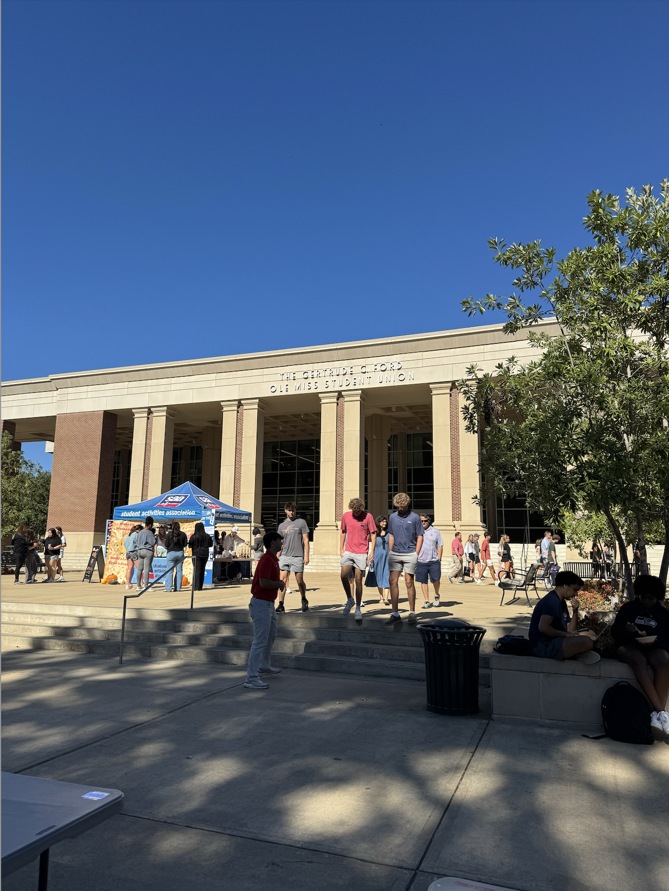

In this project, you will apply geometric transformation concepts from class to perform image rectification and explore creative applications of image homography. The goal is to understand how 2D transformations can recover fronto-parallel views of planar surfaces and be used in real-world applications such as document scanning or panoramic stitching.
Part 1: Image Homography Estimation
Implement homography estimation and image warping to rectify an input image containing a planar surface (e.g., a document, a poster, or a road sign) captured at an angle.
Tasks:
Manually select 4+ point correspondences between the original image and a target rectangular region.
Estimate the homography matrix H (e.g., using the DLT algorithm).
Warp the original image using inverse mapping to obtain a rectified (fronto-parallel) view.
Visualize before/after results.
CorrespondencesSelected Points
Original VS Rectified
CorrespondencesSelected Points
Original VS Rectified
CorrespondencesSelected Points
Original VS Rectified
Original VS Rectified
Original VS Rectified
Original VS Rectified
A homography is a projective transformation that connects two images from different perspectives. It defines how points in one image correspond to points in another while at the same time, keeping straight lines and perspective consistent. To enable rectification, we do inverse mapping so that the surface looks flat and front-facing. By selecting four points from the original image, and 4 destination points (in our case we chose a rectangle), we define how each pixel on the tilted surface should allign in the rectified view. With this point correspondences we create a system of equations of 8 equations and 8 unknowns, apply SVD and reshape into a 3x3 matrix H, that essentially captures the geometric relationship between the two image planes. Once we have H, every pixel in the original image can be remapped using this transformation, determining where each pixel in the output should come from in the input image. This process adjusts the perspective for every point on the surface which removes the distortion and produces a flat, front view result, in other words, enabling rectification.
Part 2: Creative Application
Use your homography implementation creatively to demonstrate a real-world or artistic application.
Document scanning:
Front View of book
Tilted View of Book
Semi-tilted View of Book
Text-only Tilted View of Book
Text-only Semi-tilted View of Book
For the document scanning part, I decided to grab an article from the Ole Miss yearbook. The reason behind this was to test my algorithm’s ability to apply homography not only to images but also to text. I ran multiple experiments to see which angles would work best and which ones wouldn’t achieve the intended goal. The first image shows the front view of the book for comparison purposes; we could call this the target. Of course, the homography algorithm didn’t need to do much to show the image rectified since it was already rectified. The second image was taken from the right with a good tilt. Since the text was closer to the camera and the letters in the image were legible, the text was accurately rectified, thus, we could call this a success on the text side. However, the pictures were farther away from the camera, and the homography smushed them a little bit, blurring them the further they got from the camera. The third image shows a less tilted angle that, in my opinion, yielded the best result for a realistic setting. We have a tilt, but the homography algorithm was able to rectify both the text and the pictures. The fourth image is a text-only tilted version that did not perform very well since the camera was not able to accurately capture the text in the original image. The fifth and last picture is a less tilted text-only version that performed better than the previous one and was able to render a legible scanned version of the image. In conclusion, my homography algorithm is able to simulate document scanning, but it is crucial that the original picture accurately captures the text, even if tilted, for the algorithm to correctly rectify it in the output.
Car surround-view simulation:
Experiment 1Experiment 2
For the car surround-view simulation, I took four images of a parked car. The first one was facing the front (FRONT VIEW), the second one facing the back (REAR VIEW), and the other two facing the sides of the car (LEFT and RIGHT VIEW). Once I had those images, I selected four correspondence points from each one using my point picker. To create the 360° camera effect, I chose the correspondences in the shape of a trapezoid, where the two bottom points were closer together (representing the area near the car) and the top ones were farther apart (representing the area farther from the car). I repeated this for all four images and then applied my homography algorithm to warp them into their corresponding destination coordinates, which were defined relative to the canvas center. The code used a combination of homography transformations and feather-blending masks to smoothly merge the warped images onto a single canvas.
The resulting image simulates how a top-down 360° surround camera view would look. I ran two experiments, one during the day and one at night, to observe how lighting affected the results. As we can see from the outputs, the stitching isn’t completely perfect, and adding a fifth image of the car’s roof would have made the simulation more realistic. However, since I couldn’t capture that image myself, I added one to simulate how it might appear. Some challenges I faced included positioning the camera to capture as much of each side as possible without appearing in the frame and making sure each shot was centered. After several attempts, I managed to take well-aligned photos that produced strong results and a convincing surround-view effect.
Panorama mosaicing:
Left Image

Center Image
Right ImageRightest Image
Panorama Mosaicing
For the panorama mosaicking part of the project, my idea was to take several overlapping pictures of the Ole Miss Student Union from different angles and combine them into one wide panorama using my homography code. I took a sequence of images, starting from the left side of the building and slowly rotating the camera toward the right, making sure each photo overlapped with the next. Then, I used feature detection (with ORB) to automatically find matching points between consecutive images, computed their homographies using my homography algorithm, and warped them all into a single coordinate system. The code also used blending to smooth out the edges and avoid harsh seams between images.
What worked really well was that the algorithm successfully aligned all four of my images into one continuous view. The main structure of the Union lined up correctly, and most of the overlaps blended nicely. It was very interesting to see how the homography transformations could realistically warp and merge each shot into a single perspective.
Some challenges I faced were related to the edges and warping distortion. Because each photo was taken by hand, slight rotations and height changes made it harder for the feature detector to match points perfectly. This caused some black gaps and bending at the top and bottom of the panorama, as seen in my final image. Another issue was lighting,even though the photos were all taken under similar conditions, small exposure differences made the blended areas a bit uneven. If I had used a tripod or more controlled overlap between frames, the final result would have looked even smoother.
Overall, the experiment was successful. I was able to automatically generate a stitched panorama using my own homography and blending functions, and the result clearly shows how multiple 2D images can be combined into one larger mosaic.
Part 3: Warping Comparison
Compare triangular mesh warping and thin-plate spline (TPS) warping.
Tasks:
Implement or use available routines for both warping methods.
Apply both to the same input (e.g., facial landmarks, grid deformation, or a planar surface).
Compare visually and discuss differences in smoothness, continuity, and computational cost.
1: Grid Deformation
Grid Deformation Triangular Mesh vs TPS
For this part, I compared two different warping techniques, Triangular Mesh, and Thin-Plate Spline (TPS), to see how they deform an image when given the same set of source and destination control points. I used a checkerboard pattern for this experiment because it makes distortions and bending effects easy to observe.
In the Piecewise Affine method, the image is divided into many small triangles using Delaunay triangulation. Each triangle is then warped independently using an affine transformation, and all of them are stitched back together. This creates a deformation that looks somewhat smooth overall but still has visible discontinuities along the triangle edges, especially near areas where the grid bends sharply. As we can see in the result, the checkerboard’s edges bend, but you can notice some slight breaks or irregularities in the grid lines, this happens because each triangle moves individually, and the continuity between triangles is not perfectly preserved. The advantage of this method is that it’s computationally faster, since affine transformations are simple and local, and it gives precise control over specific regions of the image. However, its main disadvantage is that the transitions between triangles are not perfectly smooth, which can cause small artifacts or visible seams when the deformation is large.
On the other hand, the Thin-Plate Spline (TPS) produces a much smoother result. Instead of working triangle by triangle, TPS calculates a continuous transformation across the entire image based on all the control points. This creates a deformation that behaves more like bending a flexible sheet of metal that is smooth, continuous, and without noticeable edges. In the checkerboard, the TPS version shows a clean, rounded bulge at the center with perfectly smooth transitions, and all grid lines flow naturally. The main advantage of TPS is this smooth and globally consistent warping, which is ideal for applications that need realistic, continuous distortions. The downside is that it’s computationally more expensive, since the transformation depends on all points at once rather than local regions, and it can become slower with large numbers of landmarks.
Overall, the visual comparison clearly shows that Triangular Mesh warping works well for structured or localized deformations, while TPS provides a more fluid and natural warp at the cost of higher computation time. For my experiment, I found the TPS output more visually appealing and continuous, while the Piecewise Affine version was faster and more geometric in its distortion.
2: Facial Landmarks
Neutral FaceSmiling Face
Triangular Mesh 1TPS 1
Happy FaceSad Face
Triangular Mesh 2TPS 2
For this part, I used Google’s MediaPipe library to automatically extract 468 facial landmarks from my source and target images. These landmarks correspond to key points on the face such as the eyes, nose, lips, jawline, and eyebrows. Once extracted, I saved them as coordinate files and used them to perform the Triangular Mesh and the Thin-Plate Spline (TPS) transformation. The idea was to simulate changes in facial expression, for example morphing a neutral expression into a smile or a smile facial expression to a frown, by smoothly mapping the position of one set of landmarks onto another.
In the Triangular Mesh method, the face is divided into many small triangles using Delaunay triangulation. Because each triangle moves separately, there can be visible seams or small cracks between triangles, especially around detailed areas such as the mouth or eyes. In my results, the triangular mesh warp successfully transferred the general expression, but some areas looked patchy. This happens because the method does not guarantee full continuity between triangles, and blending must be used to hide those boundaries. On the other hand, this method is fast and computationally efficient, since each triangle only requires a simple affine transform.
The Thin-Plate Spline (TPS) method, creates a global, smooth transformation across the entire face. Instead of warping triangles independently, TPS bends smoothly based on how the landmarks move. This results in a more natural and continuous transition between features making the skin looks smoother. In my experiment, the TPS warp produced a cleaner and more realistic result, especially around curved regions like the lips. However, it also required more computation, since every pixel depends on all the landmarks at once.
In general, I would say the TPS does a much better job than the Triangular Mesh since it produces a smoother result in practical use.
3: Planar Surface
TextSign
Text Triangular MeshText TPS
Sign Triangular MeshSign TPS
For this section, I applied both Triangular Mesh and Thin-Plate Spline (TPS) warping methods on flat, planar surfaces such as a road sign and a text image. I wanted to simulate a geometric distortion, in this case twisting of the image and observe how each algorithm handles structured shapes and straight lines.
I first generated a grid of control points that were evenly spaced in a rectangular region of the image, which would represent the area to be warped. These points were then morphed using a sinusoidal function to create a smooth deformation in the form of a wave. Both methods used the same set of control points: the source grid represented the original planar layout, and the destination grid represented the wavy version.
In the Triangular Mesh warp, the rectangular grid was divided into triangles using Delaunay triangulation. Each triangle was then warped independently using affine transformations. This technique preserved local geometry very well but introduced a lot of discontinuities at triangle boundaries. In my results, this appeared as broken edges, especially noticeable in images with strong outlines like the “SMILE” text and the road sign. Straight lines became jagged, and edges looked segmented, showing the independence of each triangular transformation. The main advantages of this method are speed and stability, it’s simple, fast to compute, and avoids over-smoothing, but in my opinion the results are not good enough to be used.
The Thin-Plate Spline (TPS) warp treated the entire image as a continuous sheet, and it produced globally coherent deformations. The resulting images showed smooth and natural bending without the cracks or discontinuities seen in the mesh method. Curves and edges remained visually continuous, and the distortion followed the wavy pattern in a very natural way. However, this global nature comes with higher computational cost and sometimes straight edges can become softly curved even in areas that should stay flat.
Based on my results, TPS produced more realistic and visually coherent warps for flat surfaces.